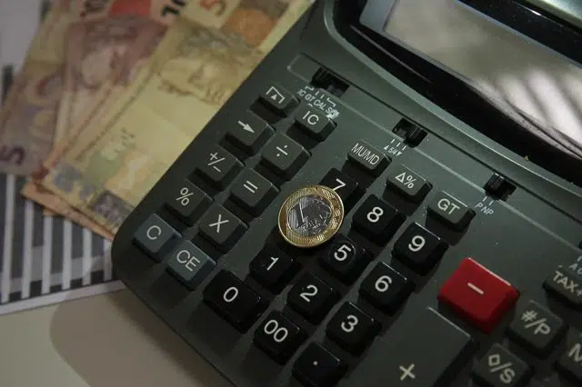

⚠️ATENÇÃO⚠️
Compromisso e Cuidado com os nossos Leitores
Nós da Papel News, temos uma missão que vai além de informar. Nós preocupamos genuinamente com o bem-estar de nossos leitores e buscamos oferecer não apenas notícias, mas também apoio e conscientização. Entendemos que cada pessoa que nos lê é parte de nossa grande família editorial.
Setembro é um mês emblemático para nós, marcado pela campanha de prevenção ao suicídio. É um período para reforçar a importância da saúde mental e do diálogo aberto sobre ansiedade e depressão. Sabemos que esses são desafios reais enfrentados por muitos e queremos estar ao seu lado, oferecendo palavras que confortam e informam.
Recomendamos que, ao sentir qualquer sintoma de ansiedade ou depressão, não hesite em buscar ajuda. Falar com alguém de confiança, seja um amigo ou familiar, pode ser o primeiro passo para encontrar suporte. Além disso, profissionais da saúde, como psicólogos, estão preparados para oferecer a assistência necessária.
Sua vida é preciosa! Queremos contribuir para que você encontre motivos para sorrir todos os dias. Por isso, nos dedicamos a criar conteúdos que informam, educam e inspiram. Estamos juntos nessa jornada, valorizando cada história e cada leitor.
Sua vida é valiosa e queremos vê-lo sorrir! 😁
Estamos aqui não apenas para trazer informações, mas para lembrar que você não está sozinho. 🙃
Política🗳
Candidatos à Prefeitura de São Paulo Intensificam Campanha em Dia de Debate
No dia 17 de setembro de 2024, a corrida eleitoral para a Prefeitura de São Paulo ganha um novo impulso com a realização de um debate entre os principais candidatos. Este evento, promovido pela RedeTV em parceria com o UOL, marca o 33º dia da campanha e é uma oportunidade crucial para os candidatos apresentarem suas propostas e debaterem questões relevantes para a cidade.
Atividades dos Candidatos
Os dez candidatos à prefeitura têm agendas repletas de compromissos ao longo do dia:
- Guilherme Boulos (PSOL): Participa do debate pela manhã e, à tarde, realiza uma caminhada pelo comércio do Jardim Paraguaçu, na zona leste. À noite, Boulos se reunirá com colaboradores de creches na região central.
- Ricardo Nunes (MDB): O atual prefeito e candidato à reeleição também estará no debate matinal. Após o evento, ele caminhará pelo comércio do Butantã e, mais tarde, concederá uma entrevista à Jovem Pan.
- Pablo Marçal (PRTB): Além de participar do debate, Marçal visitará uma transportadora na zona norte e receberá um prêmio no Troféu Gerando Salvação no Ginásio do Ibirapuera.
- Tabata Amaral (PSB): A candidata também participa do debate e, após isso, visitará o Instituto Olho do Futuro no Jardim Peri.
- José Luiz Datena (PSDB): O candidato fará sua parte no debate e depois realizará uma caminhada em Perus, na zona noroeste.
Outros candidatos, como Marina Helena (Novo), Altino Prazeres (PSTU), Ricardo Senese (UP), Bebeto Haddad (DC) e João Pimenta (PCO), também têm suas agendas definidas com atividades que vão desde gravações de vídeos até atos públicos e caminhadas em diferentes regiões da cidade.
Importância do Debate
O debate é um momento estratégico para os candidatos, pois permite que eles se posicionem sobre temas importantes como transporte público, saúde, educação e segurança. A interação direta com os adversários pode influenciar a percepção dos eleitores e potencialmente alterar as intenções de voto.
Concluíndo
Com a agenda cheia e o debate em destaque, os candidatos buscam conquistar o eleitorado paulistano em um momento decisivo da campanha. As atividades programadas refletem não apenas as propostas individuais, mas também a dinâmica política que se estabelece nas semanas que antecedem as eleições. A participação ativa dos candidatos nas comunidades é fundamental para engajar os eleitores e fortalecer suas bases de apoio.
Astronomia🌌
Eclipse Lunar Parcial: Um Espetáculo Astronômico Visível no Brasil
Na noite de terça-feira, 17 de setembro de 2024, os amantes da astronomia poderão testemunhar um fascinante eclipse lunar parcial, que ocorrerá simultaneamente com uma Superlua. Este fenômeno astronômico será visível em várias partes do mundo, incluindo a América do Sul, onde o Brasil terá uma excelente oportunidade para observá-lo, dependendo das condições climáticas.
Cronograma do Eclipse
O eclipse lunar parcial começará às 21h41 (horário de Brasília) com a fase penumbral, seguida pelo início do eclipse parcial às 23h12. O ponto máximo do eclipse será atingido às 23h44 e o fenômeno se encerrará na madrugada do dia seguinte, com o término da fase penumbral às 1h47. Ao todo, o evento terá uma duração aproximada de quatro horas.
O Que é um Eclipse Lunar Parcial?
Um eclipse lunar ocorre quando a Terra se posiciona entre o Sol e a Lua, projetando sua sombra sobre o satélite natural. No caso do eclipse parcial, apenas uma parte da Lua entra na sombra da Terra (umbra), enquanto o restante permanece iluminado. Essa característica torna o fenômeno menos dramático que um eclipse total, mas igualmente impressionante.
Como Observar o Eclipse
Uma das vantagens do eclipse lunar é que ele pode ser observado sem a necessidade de equipamentos especiais ou cuidados adicionais, ao contrário dos eclipses solares. Os interessados em acompanhar o evento devem encontrar um local com boa visibilidade do céu e, se possível, longe da poluição luminosa das cidades.
Transmissão ao Vivo
Para aqueles que não puderem observar o fenômeno devido a condições meteorológicas desfavoráveis ou outras limitações, o Observatório Nacional (ON) transmitirá o evento ao vivo em seu canal no YouTube. A transmissão começará às 21h e será conduzida pela astrônoma Josina Nascimento, que compartilhará informações e curiosidades sobre o eclipse.
Economia💰
Mercado Eleva Projeção de Crescimento da Economia Brasileira para 2,96% em 2024
O mercado financeiro brasileiro revisou suas expectativas de crescimento econômico para 2024, elevando a projeção de 2,68% para 2,96%. Essa atualização foi divulgada no Boletim Focus, uma pesquisa semanal do Banco Central que reúne as previsões de analistas sobre indicadores econômicos. A revisão ocorre após a divulgação de dados positivos do Produto Interno Bruto (PIB) do segundo trimestre, que registrou um crescimento de 1,4% em relação ao primeiro trimestre e uma alta de 3,3% em comparação ao mesmo período do ano anterior.
Contexto da Revisão
A elevação nas expectativas é um reflexo da recuperação econômica que o Brasil vem experimentando. Em 2023, a economia cresceu 2,9%, superando as projeções de analistas e atingindo um valor total de R$ 10,9 trilhões. Essa trajetória positiva é vista como um sinal de resiliência em meio a um cenário global desafiador.
Além disso, as previsões para o PIB nos anos subsequentes permanecem estáveis, com uma expectativa de crescimento de 1,9% para 2025 e 2% para 2026 e 2027. A confiança no crescimento econômico é essencial para atrair investimentos e estimular a atividade econômica.
Expectativas para Inflação e Juros
O Boletim Focus também trouxe atualizações sobre a inflação. A previsão para o Índice Nacional de Preços ao Consumidor Amplo (IPCA) em 2024 subiu ligeiramente de 4,3% para 4,35%, ainda acima da meta estabelecida pelo Conselho Monetário Nacional (CMN), que é de 3%, com uma margem de tolerância de 1,5 ponto percentual.
Em relação à taxa Selic, que atualmente está em 10,5% ao ano, o mercado espera um aumento para 10,75% na próxima reunião do Comitê de Política Monetária (Copom), com uma projeção final de 11,25% até o fim do ano. O aumento da Selic é uma estratégia do Banco Central para controlar a inflação e conter a demanda aquecida na economia.